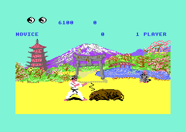

<meta charset="utf-8">
<meta name="viewport" content="width=device-width, initial-scale=1">
<title>{{title}}</title>
<link rel="preconnect" href="https://fonts.googleapis.com">
<link rel="stylesheet" href="https://fonts.googleapis.com/css2?family=Lato:wght@400;700;900&family=IBM+Plex+Mono:wght@400;500&display=swap">
<link rel="stylesheet" href="reference/fist-page.css">
<!-- tabs -->
<header class="hero">
  <p class="eyebrow">{{platform}} · {{year}} · {{publisher}}</p>
  <h1>{{title}}</h1>
  <p class="sub">A bull that falls to one move at one range, a blow that crashes the game when a stray timer runs, slips in the scoring, and the questions still open.</p>
</header>
<main class="wrap">
<section id="copy">
  <p class="fig">01 · This copy</p>
  <h2 class="t">The Melbourne House disk</h2>
  <p>The pages describe one copy: a disk image of the Melbourne House release, with its menu (<i>Melbourne House presents · 1. exploding fist</i>) and ten files that the loader places in memory before entering the game. No crack or trainer text appears on it. According to secondary sources (see the <a href="./">Overview</a>), some early C64 versions lacked the bull; this one has it, and it was played through in the emulator. The <a href="about.html">About</a> tab lists the files and where each one ends up, along with credits, sources and methods. No game image is hosted here. The <a href="source.html">Source code</a> tab links every explanation on these pages to its address.</p>
</section>

<section id="bull">
  <p class="fig">02 · The bonus round</p>
  <h2 class="t">Secret: only one blow fells the bull</h2>
  <p class="lede">After a rank is cleared in front of the Buddha, a bull charges across the screen. One of the player's moves, at one distance, fells it.</p>
  <div class="plate"><div class="fx-row"><canvas id="bullCv" width="216" height="189"></canvas><div style="flex:1;min-width:260px"><div class="fx-ctl"><button class="fx-btn" id="bullPlay">Play the bull's charge</button></div><p class="fx-out" id="bullOut"></p></div></div>
    <p class="cap">The bull's frames drawn from its own tables (shape frames <code>$3B</code>-<code>$4C</code>, animations <code>$1C</code>-<code>$1F</code>), its sprites shown directly by pointer from memory nobody else uses: past the fighters' buffers at <code>$C940</code>, under the I/O chips and in unused characters of the font. Below: the emulator, after felling the bull at a distance of 26.</p></div>
  <p><code>bull_round</code> (<code>$132C</code>) fells the bull only when the player is in move 7, the down-forward blow from a crouch, on its striking frame <code>$0D</code>, with the bull between 25 and 29 units ahead (<code>$136C</code>-<code>$1381</code>). That is worth 3,000 points. Any other blow, or the right blow at the wrong distance, does nothing, and the bull runs the player over. If the bull passes without touching the player, the round ends with 500 points (<code>$1406</code>).</p>
  <p>The crouch matters: from standing, down-forward is a different move (<code>$18</code>), so the player has to be crouching already when the bull comes into range. In the emulator, holding down and adding forward when the bull was 28 units away felled it at 26.</p>
</section>

<section id="trap">
  <p class="fig">03 · A trap</p>
  <h2 class="t">Bug: a blow can crash the game if a timer is running</h2>
  <p class="lede">After every scoring blow the game reads a register it never sets, and if that register is not zero it throws its own stack out of balance.</p>
  <p>The reaction to a blow (<code>$2CA8</code>) reads the control register of CIA 2's timer A (<code>$DD0E</code>). The game never starts that timer, so on a normal machine the read gives 0 and nothing happens. If it is running, the routine pushes two bytes and jumps into the animator, and the return address is lost. In the emulator, with the timer started by hand before a blow, the screen filled with garbage and the processor ended up executing the speech table at <code>$0201</code>. Why the check is there is not known; a cartridge or tool left running in the background is one thing it would catch.</p>
  </section>

<section id="bugs">
  <p class="fig">04 · Bugs</p>
  <h2 class="t">Bug: three slips in the scoring and the opponent</h2>
  <p class="lede">Small mistakes in the code, each read from the routine; none of them stops the game.</p>
  <ul>
    <li>The points tie-break at time up (<code>$2169</code>) reads the first fighter's half-or-whole flag for both fighters, where the score routine (<code>$206C</code>) uses each fighter's own. A half point by the second fighter can count as a whole one in the tie-break, or the reverse.</li>
    <li>One of the computer's scripted plans (<code>$2661</code>) compares its own facing with the first fighter's move number, an index slip that probably meant the other fighter's facing.</li>
    <li>Another plan (<code>$2646</code>) stores the next plan without the fighter index, so in the attract mode, where both fighters are computers, it always changes the first fighter's plan.</li>
  </ul>
</section>

<section id="odd">
  <p class="fig">05 · Odds and ends</p>
  <h2 class="t">Things the manual never says</h2>
  <ul>
    <li>The 30 seconds on the clock are 30 units of 50 passes of the fight loop (<code>$212F</code>). A pass usually takes one frame, but measured in the emulator a unit took 50 to 66 frames, so a bout lasts 30 to 40 real seconds.</li>
    <li>RESTORE does nothing: the game's NMI handler ignores any interrupt that did not come from its own timer (<code>$2FF2</code>).</li>
    <li>Fire on joystick port 1 starts a one-player game from the attract mode, because the function-key scan reads the port the joystick shares with the keyboard (<code>$1E64</code>). Checked in the emulator.</li>
    <li>Holding fire at the end of a one-player game skips the high-score table, and the new entry keeps the name <code>......</code> (<code>$1472</code>).</li>
    <li>Past 10th dan the rank stays on screen as 10TH DAN while the opponent's level is drawn at random from 7 to 10 (<code>$1C65</code>).</li>
    <li>In a two-player game a blow's yin-yang appears in the panel and is wiped at the next exchange: only points count (<code>$1B7A</code>). Checked in the emulator.</li>
  </ul>
</section>

<section id="open">
  <p class="fig">06 · Open questions</p>
  <h2 class="t">What is not settled</h2>
  <ul>
    <li>Why the reaction to a blow tests CIA 2's timer A (<code>$2CAE</code>).</li>
    <li>What Melbourne House called each move. The game stores no names, and the names on the How it works tab describe what each move's frames show.</li>
    <li>Whether fighters exactly 21 lines apart make a sprite row appear a frame late: the multiplexer asks for two changes on the same raster line then (<code>$32EA</code>, <code>$32FD</code>).</li>
    <li>What two files on the disk, <code>m.tsound</code> and <code>m.spchtbl</code>, are for. Neither is in the game's memory as it stands on disk; they may be the loader's shout.</li>
    <li>What the sprite images at <code>$D200</code>-<code>$D3BF</code> and <code>$E5C0</code>-<code>$E63F</code> are for. Nothing found points at them.</li>
  </ul>
</section>
</main>
<footer style="margin:16px 0 0;padding:22px var(--gx) 0;border-top:1px solid #e0ded8;font-family:'IBM Plex Mono',ui-monospace,Menlo,monospace;font-size:12px;color:#80838a"><a href="https://github.com/gamesexplained/gamesexplained" aria-label="GitHub" style="display:inline-flex;align-items:center;justify-content:center;width:26px;height:26px;margin-left:8px;border:1px solid #e0ded8;border-radius:7px;background:#ffffff;color:#80838a;vertical-align:middle"><svg width="15" height="15" viewBox="0 0 24 24" fill="currentColor" aria-hidden="true"><path d="M12 .297c-6.63 0-12 5.373-12 12 0 5.303 3.438 9.8 8.205 11.385.6.113.82-.258.82-.577 0-.285-.01-1.04-.015-2.04-3.338.724-4.042-1.61-4.042-1.61C4.422 18.07 3.633 17.7 3.633 17.7c-1.087-.744.084-.729.084-.729 1.205.084 1.838 1.236 1.838 1.236 1.07 1.835 2.809 1.305 3.495.998.108-.776.417-1.305.76-1.605-2.665-.3-5.466-1.332-5.466-5.93 0-1.31.465-2.38 1.235-3.22-.135-.303-.54-1.523.105-3.176 0 0 1.005-.322 3.3 1.23.96-.267 1.98-.399 3-.405 1.02.006 2.04.138 3 .405 2.28-1.552 3.285-1.23 3.285-1.23.645 1.653.24 2.873.12 3.176.765.84 1.23 1.91 1.23 3.22 0 4.61-2.805 5.625-5.475 5.92.42.36.81 1.096.81 2.22 0 1.606-.015 2.896-.015 3.286 0 .315.21.69.825.57C20.565 22.092 24 17.592 24 12.297c0-6.627-5.373-12-12-12"/></svg></a><a href="https://discord.gg/3V9GWyRDWV" aria-label="Discord" style="display:inline-flex;align-items:center;justify-content:center;width:26px;height:26px;margin-left:8px;border:1px solid #e0ded8;border-radius:7px;background:#ffffff;color:#80838a;vertical-align:middle"><svg width="15" height="15" viewBox="0 0 24 24" fill="currentColor" aria-hidden="true"><path d="M20.317 4.3698a19.7913 19.7913 0 00-4.8851-1.5152.0741.0741 0 00-.0785.0371c-.211.3753-.4447.8648-.6083 1.2495-1.8447-.2762-3.68-.2762-5.4868 0-.1636-.3933-.4058-.8742-.6177-1.2495a.077.077 0 00-.0785-.037 19.7363 19.7363 0 00-4.8852 1.515.0699.0699 0 00-.0321.0277C.5334 9.0458-.319 13.5799.0992 18.0578a.0824.0824 0 00.0312.0561c2.0528 1.5076 4.0413 2.4228 5.9929 3.0294a.0777.0777 0 00.0842-.0276c.4616-.6304.8731-1.2952 1.226-1.9942a.076.076 0 00-.0416-.1057c-.6528-.2476-1.2743-.5495-1.8722-.8923a.077.077 0 01-.0076-.1277c.1258-.0943.2517-.1923.3718-.2914a.0743.0743 0 01.0776-.0105c3.9278 1.7933 8.18 1.7933 12.0614 0a.0739.0739 0 01.0785.0095c.1202.099.246.1981.3728.2924a.077.077 0 01-.0066.1276 12.2986 12.2986 0 01-1.873.8914.0766.0766 0 00-.0407.1067c.3604.698.7719 1.3628 1.225 1.9932a.076.076 0 00.0842.0286c1.961-.6067 3.9495-1.5219 6.0023-3.0294a.077.077 0 00.0313-.0552c.5004-5.177-.8382-9.6739-3.5485-13.6604a.061.061 0 00-.0312-.0286zM8.02 15.3312c-1.1825 0-2.1569-1.0857-2.1569-2.419 0-1.3332.9555-2.4189 2.157-2.4189 1.2108 0 2.1757 1.0952 2.1568 2.419 0 1.3332-.9555 2.4189-2.1569 2.4189zm7.9748 0c-1.1825 0-2.1569-1.0857-2.1569-2.419 0-1.3332.9554-2.4189 2.1569-2.4189 1.2108 0 2.1757 1.0952 2.1568 2.419 0 1.3332-.946 2.4189-2.1568 2.4189Z"/></svg></a><br>© Games Explained contributors. Write-ups, facts and symbol maps are available under <a href="https://creativecommons.org/licenses/by-sa/4.0/" style="color:#1f5fa8;text-decoration:none">CC BY-SA 4.0</a>; code under <a href="https://opensource.org/licenses/MIT" style="color:#1f5fa8;text-decoration:none">MIT</a></footer>
<script src="../../lib/c64.js"></script>
<script src="../../lib/sid.js"></script>
<script src="reference/fist-page.js"></script>
